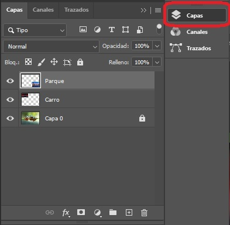
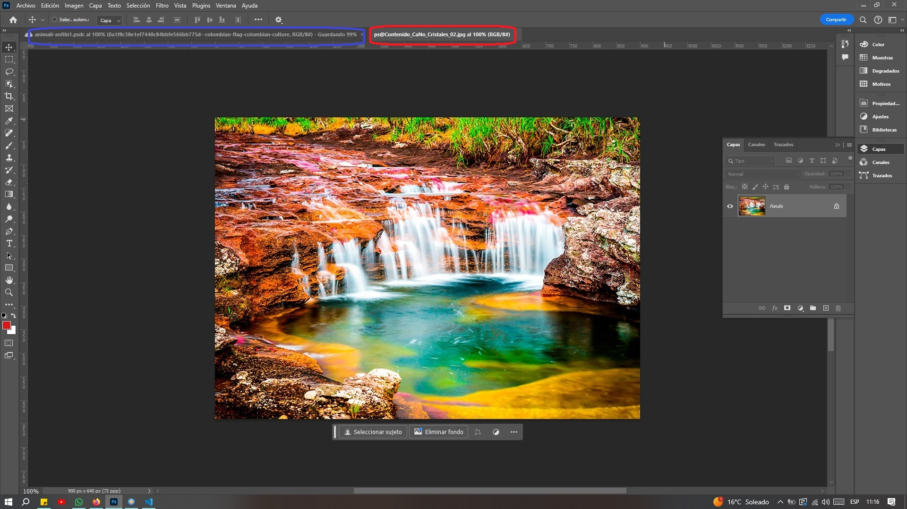
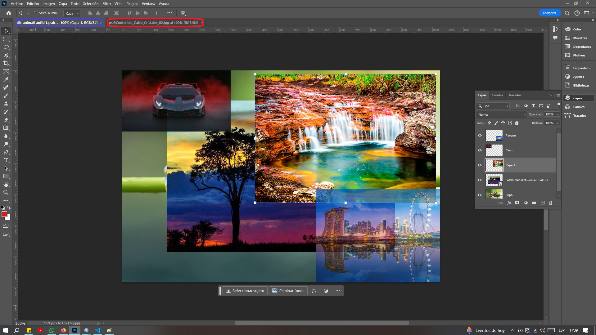
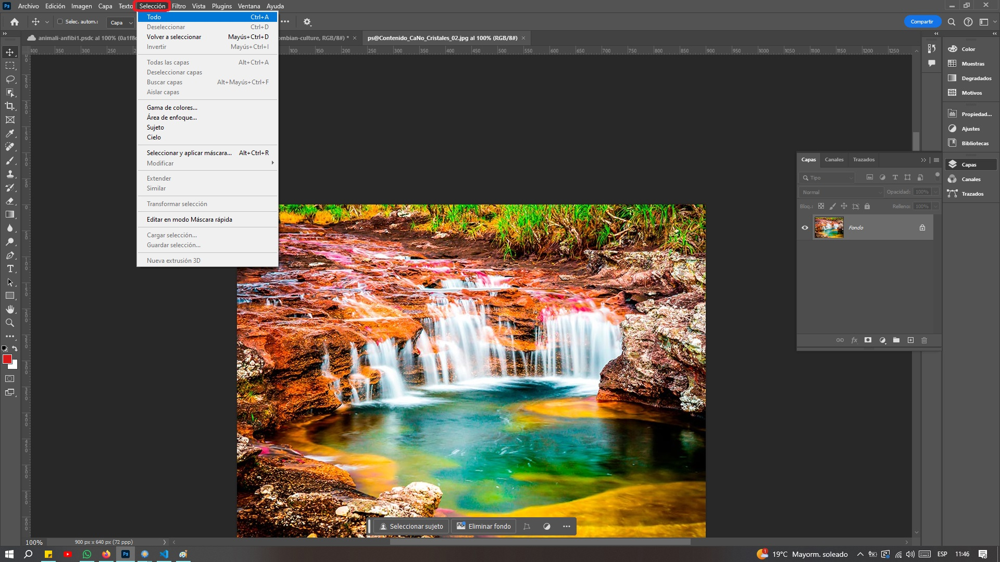

Trabajo con Capas
Introducción
Las capas en Photoshop son una característica fundamental y una de las herramientas más poderosas del programa. Permiten trabajar de manera no destructiva, ya que cada elemento, ajuste o efecto puede colocarse en una capa independiente. Esto facilita la edición, organización y manipulación de cada componente del diseño sin afectar los demás.
El uso de capas permite aplicar efectos, máscaras y modos de fusión para lograr composiciones más sofisticadas y flexibles. Además, se pueden agrupar, bloquear y ajustar su opacidad para mejorar el flujo de trabajo y mantener la organización del proyecto.
Otra ventaja clave es la posibilidad de utilizar objetos inteligentes, que conservan la calidad de los elementos originales y permiten modificaciones no destructivas. Asimismo, el uso de capas de ajuste posibilita realizar correcciones de color, brillo, contraste y otros parámetros sin alterar la imagen original.
El panel de capas en Photoshop proporciona diversas herramientas para gestionar eficazmente cada una de ellas, como la creación de máscaras, la vinculación de capas, el uso de estilos de capa y la conversión en objetos inteligentes, lo que amplía las posibilidades creativas y de edición.
Conceptos Básicos de Capas
¿Qué son las capas en Photoshop?
Las capas son como hojas transparentes apiladas una sobre otra. Cada capa puede contener diferentes elementos como imágenes, texto, formas, o ajustes. Se puede ver las capas y su orden en el panel de capas, que generalmente se encuentra en la parte derecha de la interfaz de Photoshop.
Tipos de capas
- Capas de Imagen : Contienen imágenes rasterizadas, es una imagen digital compuesta por una matriz de píxeles, que se pueden editar.
- Capas de Texto : Permiten añadir y editar texto.
- Capas de Ajuste : Aplican efectos como brillo, contraste, saturación, etc., de manera no destructiva.
- Capas de Forma : Contienen formas vectoriales.
- Capas de Relleno : Rellenan la capa con un color sólido, degradado o un patrón.
- Capas de Objetos Inteligentes : Permiten aplicar transformaciones y efectos no destructivos a objetos vectoriales o rasterizados.
Para qué se Usan las Capas en Photoshop
- Organización del trabajo : Facilitan la organización del proyecto, ya que cada elemento puede estar en una capa separada, haciendo más fácil su edición y manejo.
- Edición no destructiva : Permiten realizar cambios sin alterar permanentemente la imagen original. Por ejemplo, puedes ajustar el color o el brillo en una capa de ajuste sin modificar la imagen subyacente.
- Efectos y Filtros : Las capas permiten aplicar efectos y filtros a elementos específicos sin afectar el resto del diseño. Además, se pueden usar máscaras de capa para aplicar efectos a partes específicas de la capa.
- Composiciones Complejas : Composiciones complejas: Al trabajar con capas, es más fácil crear composiciones complejas, ya que puedes mover, ajustar y modificar cada capa de manera independiente.
- Transparencia y Mezclas : Las capas permiten el uso de transparencias y modos de fusión para crear efectos visuales complejos. Puedes ajustar la opacidad de una capa y usar diferentes modos de fusión para cambiar cómo interactúan las capas entre sí.
Ejemplo de Uso de Capas
Se está diseñando un póster:
- La capa de fondo puede contener una imagen o un color sólido.
- En una capa superior, se puede añadir texto con el título del póster.
- En otra capa separada, se pueden incluir imágenes o gráficos adicionales.
- Se puede usar capas de ajuste para mejorar la apariencia general, como ajustar el brillo, contraste y color de todo el póster.
- Si se necesita añadir sombras o efectos especiales a algún elemento, se puede hacer en una capa independiente para mantener el control total sobre el efecto.
Selección de la Herramienta de Capas
- Atajo de teclado: f7.
- Menú: Ventana > Capas >
- Panel Lateral: Hacer clic en el ícono de las capas. 
Manejo de Capas
Pantalla general de capas de Adobe Photoshop:
El orden de las capas desde la inferior a la superior es: 1. fondo, 2. Carro y 3. Parque.
Selección de una Capa: Para seleccionar una capa, simplemente haga clic sobre ella. Al seleccionarla en el panel de capas, esta se resaltará en color gris. En la imagen anterior, la capa "Parque" está seleccionada y es con la que se está trabajando, siendo la capa superior de las tres disponibles.
Cuando se selecciona un objeto perteneciente a cualquier capa, automáticamente se cambia a esa capa. Este cambio ocurre si la opción de Selección Automática está activada, la cual esta predeterminada para capas. De lo contrario, primero se debe seleccionar la capa en el panel lateral y luego escoger el elemento a editar.
Cambio de Nombre de una Capa: Doble-click sobre el nombre.
Es crucial que los nombres de las capas sean claros y reflejen su contenido, facilitando así su identificación y recordación.
Si se desea cambiar la configuración del panel de las capas, p. ej. el tamaño de las previsualizaciones de las capas, en el panel se hace click en el icono superior a la derecha tres rayas > Opciones de Panel > escoger entre las cuatro opciones la que más guste.
Las capas se pueden cambiar de posición. Para hacerlo, mantener presionado el botón izquierdo del ratón sobre la capa que se quiera mover, arrástrala hacia arriba o hacia abajo según sea necesario y suéltala en el lugar deseado.
Edición de Capas
Ocultar Capas
Para ocultar se debe picar sobre el ojo que está al lado izquierdo de cada capa. Al picar sobre cualquier ícono en forma de ojo el contenido de la capa desaparece:
Nivel de Opacidad
El nivel de opacidad se regula con el botón deslizable que se encuentra encima de las capas:
Valores desde 0% que es totalmente invisible hasta 100% totalmente visible.
En la imagen anterior se pude ver la capa tres "3", con una transparencia del 35%.
Creación Capas
Para crear una capa nueva se puede de dos formas diferentes:
- Teclado: ctrl + shift + n.
- Panel lateral: En este panel picar el botón
+ , como se muestra en la figura, se crea con el nombre capa n. - Menú principal: Capa > Nueva > Capa >
Las nuevas capas se crean siempre encima de la capa que se esté en ese momento
Eliminar Capa(s)
Existen varias formas para eliminar capas, entre ellas:
- Teclado: Con la capa seleccionada oprimir del.
- Panel lateral: En este panel picar el botón
 , como se muestra en la figura y confirmar la eliminación.
, como se muestra en la figura y confirmar la eliminación. - Menú principal: Capa > Eliminar > Capa >S
- Varias capas al tiempo: seleccionar las capas con la tecla ctrl oprimida y picar en la tecla del .
Bloqueo de Capas
Para bloquear una capa se tiene la siguiente opción para por ejemplo bloquear la capa inferior "Capa":
- Panel lateral: Picar en el candado para bloquear la capa.
- Panel lateral: click-derecho sobre la capa, en el menu emergente picar en la opción Bloquear capas...
Agregar una Imagen
Para agregar una imagen a un diseño de capas en Adobe Photoshop, se puede seguir los siguientes pasos:
- Arrastrar y Soltar: Una de las formas más sencillas es arrastrar y soltar la imagen desde el explorador de archivos directamente al área de trabajo de Photoshop. Esto creará automáticamente una nueva capa con la imagen importada.
- Menú Principal: Hay dos formas diferentes de agregar una imagen:
- Archivo > Colocar elementos incrustados... > para guardar una copia de la imagen dentro del archivo de Photoshop.
- Archivo > Colocar elementos vinculados... para mantener un enlace a la imagen original.
La imagen se coloca en una capa por encima de la última capa inferior.
La imagen aparece con con una "X" azul de esquina a esquina, esto indica que la imagen está en modo de transformación libre. Esto ocurre inmediatamente después de que la imagen ha sido importada o colocada en el documento.
La "X" azul es una guía visual que permite ver los límites de la imagen y su posición en el lienzo, facilitando el ajuste del tamaño y la ubicación de la imagen. Este modo se permite transformar la imagen (cambiar su tamaño, rotarla, distorsionarla, etc.) antes de confirmarla como una capa definitiva en el documento.
Para finalizar el proceso de transformación y eliminar la "X" azul:
- Confirmar la transformación: Presionar Enter o hacer clic en el icono de "check" (✓) en la barra de opciones en la parte superior de la pantalla.
- Cancelar la transformación: Presionar Esc o picar en el icono de "cancelar" (x) en la barra de opciones para deshacer la colocación de la imagen.
Una vez confirmada la transformación, la "X" desaparecerá y la imagen se convertirá en una capa editable en tu documento de Photoshop.
Agregar una Imagen a un Diseño de Capas
Si lo qe e necesita es copiar una imagen desde un archivo que está abierto simultáneamente con el archivo destino, se tienen dos posibilidades:
- Herramienta Mover: Se desea llevar la imagen de la pestaña roja a la azul.
Para realizar esta acción, se debe hacer clic con el botón izquierdo del ratón sobre la imagen en la pestaña roja, mantener el botón presionado, arrastrar la imagen hasta la pestaña azul y soltarla allí. Automáticamente, se creará una nueva capa de trabajo en la pestaña destino con la imagen.Como se puede observar se creo una nueva capa sobre la penúltima capa y por debajo de las otras dos superiores. - Menú Principal: En esta opción del menú, se selecciona Seleccionar > Todo > y luego se utiliza el clásico ctrl + c para copiar. Después, se cambia a la pestaña de destino, que es la de color azul, y se pega con ctrl + v.
Agregar una Imagen a un Diseño de Capas
Si se quiere cambiar el tamaño de la imagen se puede hacer de dos formas diferentes, pero antes de debe entrar a la herramienta de transformación libre desde el menú principal así seleccionando Edición > Transformación Libre >:
- "Para modificar el tamaño de la imagen, se arrastra desde los pequeños cuadros en las esquinas utilizando el ratón. Para cambiar la posición de la imagen, se hace clic sobre ella y, manteniendo presionado el botón izquierdo del ratón, se arrastra hasta la ubicación deseada.
- Barra de Opciones: En esta barra se encuentran las opciones X y Y para posicionar la imagen, así como las opciones de Ancho y Alto para ajustar su tamaño deseado.
Al terminar la edición se debe o bien confirmar o cancelar la edición con los botones X y marca de verificación.
Desbloquear Capas
Cuando una capa está bloqueada, el ícono de candado aparece al lado derecho de la capa en el panel de capas. En esta condición, la capa no se puede editar. Para desbloquearla, solo se debe hacer clic en el candado, y de esta manera, la capa quedará habilitada para su edición